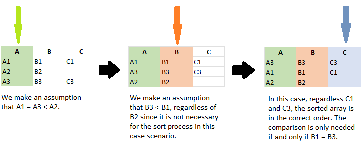
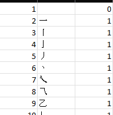
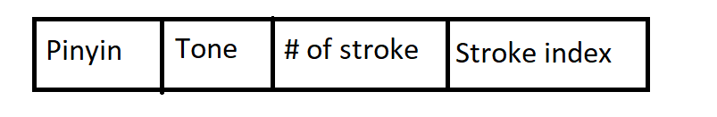

INFO 6205 Final Project
Extract Using existing conventional simple sorting algorithms to sort Chinese strings can impose unforeseeable issues, and they could suffer greatly from maintaining a high accuracy rate. In this project, we are aiming at exploring tangible ways to sort strings fulfilled with Chinese characters in Pinyin or Stroke order with user-defined data structure. In this report, we wall walk through the advantages and disadvantages of the custom-defined data structure which we used to adapt to various sorting algorithm while achieving high accuracy and efficiency. This special user-defined sorting algorithm generally has a better accuracy than conventional sorting algorithm such as Quick Sort, while it does not require a high memory runtime usage. Such algorithm can also effortlessly extend to other string sort instances which contains character-based languages such as Korean, Japanese, and Thai.
1. Introduction
Sorting is a behavior which seems natural to we human beings. It is highly integrated into our daily life. While sorting objects or elements, we separate and categorize them based on the similarities and differences. In this way, it enables us to index items in a defined order for quick locating and comparison in the future. Therefore, searches become less time-consuming sequential searches. String sort is the foundation of many data science and management applications which involve large-scale data. Hence, it is inevitable that string sorting is a crucial practice.
We need to acknowledge that the East Asian languages are several degrees more complex than European languages such as English, French, and Spanish. For instance, when it comes to English, the language consist of twenty-six alphabets. In order to make a meaningful representation, it requires multiple alphabets to make a unique representation. However, when it comes to Chinese language, there are roughly fifty thousands characters. The character itself can represent a special meaning.

Source : English language, alphabet and pronunciation (omniglot.com)

Source : Chinese characters - Wikipedia
It is implausible for anyone to develop a design of input peripherals to accommodate the needs of inputting different Chinese characters into computer systems. However, there are two possible approaches that we can rely on to access the Chinese character, which we desire: the stroke-based input method and the pinyin-based input method. Both systems have left strong presentations in the twentieth century. However, as Simplified Chinese is becoming increasingly dominant, the stroke-based input method is slowly fading away due to its high requirement for memorization and low input speed. Therefore, the primary way to learn Chinese characters is to understand their pinyin presentation in the modern era. Yet, it is still necessary to utilize a stroke-based sorting algorithm when two characters share the same pronunciation where the pinyin and tone are identical. Hence, it is safe to conclude that to master the accuracy of Chinese string sorting, factoring pinyin-based and stroke-based sorting is necessary.
In this paper, we will study various sort algorithms and discuss the advantages and pitfalls of different user-defined Chinese string sorting methods to form a deep understanding of the complexity of the task. In addition, we will look into the time and space complexity and the potential improvement which we could conduct in future studies.
2. Relative Studies
To tackle the difficulties in sorting Chinese string, there are multiple aspects which we need to explore in the study: sort complexity, sort order, and potential edge cases which we could encounter in the reality.
2.1 Sort Complexity
There are several sorting established sorting algorithms existing in the wild, and most of them are comparison based sorting algorithms such as [Quick Sort[1]][1], as well as [Insertion Sort[2]][2]. However, due to the need of making comparisons while sorting the objects, the complexity of Insertion Sort is
2.2 Sort Order
When it comes to sorting Chinese strings, the conventional invariance of the sort process is that each word shall be treated separately when they are represented in its original format as a 'char' type data. Traditionally, we would simply sort the string in a sequential order by sorting the whole list based on character at each index value. For instance, if we denote the Chinese string as

To sort the set of strings which contains maximum of three characters, we will start the sort process from the first character, which is

In this manner, we would need to traverse the array for a maximum of
2.3 Potential Issues
For English words, each word has one unique pronunciation under the same language system. Though the sounds for a particular word can differ slightly due to the variation of dialects, we can easily recognize the word and come up with a unique spelling. The only difference in spelling would happen when we compare American English and British English. For instance, 'color' and 'colour' are referring to the same word. However, when it comes to Chinese, the same word would have drastically diverse pronunciations. For example, when we look at the Chinese character '[重[5]][5]', it has two pronunciations with different meanings.
| 重 | Pinyin | Meaning |
|---|---|---|
| 1 | chóng | Duplicated |
| 2 | zhòng | Heavy |
There is no defined rules in terms which pronunciation we should select when the character is represented in name or other text. As the solution of the issue is case-oriented, it is highly possible that the result generated by existing algorithms and applications contains biases.
In addition, there can also be multiple words linked to the same pronunciation in Chinese characters. For instance, when it comes to '[sān[6]][6]', there can be multiple Chinese characters share the same pinyin format, such as '三', '叁', and '叄'. They are all commonly used in Chinese language. As a result, sorting Chinese strings based on pinyin and tone is not sufficient enough to yield correct and definitive ordered result. Other options must be explored to enhance the accuracy of the sort order.
3. Sort Algorithm Based On User-Defined Order
3.1 Constructing Unique Identifier String For Each Unique Chinese String
To convert the raw Chinese strings into easily comparable form, we can first consider converting each character into its pinyin format. To enhance the accuracy, we would translate them into a sequence of English letters coupling with a tone number at the end of the string. Let us take '三' as an example again, instead of representing it as 'sān', we will in turn denote it as 'san3' for easy comparison. In order to address the issues mentioned in Section 2.3, we would like to introduce the stroke number into consideration. To do so, we constructed a database which contains the number of strokes along with its stroke sorting index for one single character.

Since Chinese is a pictograph, the best way to get the number of strokes is to make a mapping table. So the first thing is to output all the Chinese character in the Unicode from U9FA6 to U9FBF as a csv file. Then we use the stroke sorting function of Excel to sort Unicode and Chinese characters. And then we found that there was something like a positive correlation between Unicode size and strokes overall .So we wrote a simple program to sweep through the approximate number of strokes of Chinese characters. The next step is to determine the range of strokes manually one by one.
However, there can be cases where the Chinese characters share the same pronunciation and stroke number, for instance, '晖' and '珲' both share a pinyin and tone format of 'hui1', and their stroke numbers are both 10. Then the absolute index value of a given Chinese character becomes important in ruling out the biases.
Based on the given information, we have constructed a unique storage structure string to present each character as:

Pinyin: maximum of 6-letter English string
- Since the maximum length of pinyin of a Chinese word is 6 English letters long, we should expect 1 to 6 English letters occupying the first block of the storage string.
Tone: fixed 1-digit integer value
There are 5 tones in the Simplified Chinese pronunciation:

Therefore, we should expect 1-digit long integer occupying the second block of the storage string.
Number of stroke: fixed 2-digit integer value
- As the third block is located between two integer blocks, it is important to differentiate them by making the third block with a fixed length to avoid potential truncation issues. As the maximum number of strokes stored in the lookup database table is less than 100, it is natural for us to define the third storage block as 2-digit long integer value.
Stroke index: fixed 5-digit integer value
- The maximum number of the stroke index table is less than 30000, to avoid truncation issues, we need to define this block as a 5-digit long integer value.
In this way, a Chinese character can be represented in a unique order-able and identifiable storage string. For instance, for '冰', it has a unique identifier as bing10601082. In this way, there is no long need to store the name into separated cells in an array as [[A], [B], [C]]. Instead, we can concatenate them into one unique identifier string for each unique Chinese string. In this way, we can accelerate up the sorting speed while gaining unmatchable accuracy.
[1]: Hore C. Quicksort [J]. The Computer Journal 1962, 5(1):10-16
[2]: Knuth D. The art of computer programming. Vol. 3: Sorting and searching. Addison Wesley, 1973.
[3]: Wild, Sebastian & Nebel, Markus & Martínez, Conrado. Analysis of Pivot Sampling in Dual-Pivot Quicksort. Algorithmica, 2014. 75. 10.1007/s00453-015-0041-7.
[4]: Cormen TH, Leiserson CE, Rivest RL et al. Introduction to algorithms (2nd Ed). Cambridge MA: MIT Press; 2001.
[5]: 重. 维基词典，自由的多语言词典. (n.d.). Retrieved December 6, 2021, from https://zh.m.wiktionary.org/zh-hans/%E9%87%8D.
[6]: 三. 维基词典，自由的多语言词典. (n.d.). Retrieved December 6, 2021, from https://zh.m.wiktionary.org/wiki/%E4%B8%89.